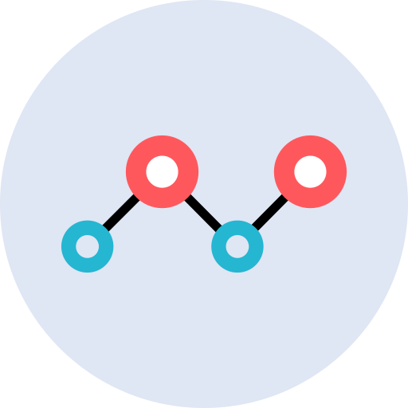

Have you ever found strange shapes in your GTFS?
So this tool is going to help you to fix and get a new shapes.txt, ready to use in your applications.


shapes
Upload the shapes.txt file from your GTFS .zip file

Center
Set a fixed point as reference for shape points
Radius
Calculate area where shapes points should be in
Get a new correct shapes.txt without bugged shape points.
Validate shapes in your GTFS.
It detects any shape point that is not contained in the central area, built with center and radius values.

GTFS Shape Validator lists all shapes of your GTFS.
If you don't want to fix every shape in the file, you can just select shapes to check their details or fix them one by one.

Rebuild shapes by dragging bugged shape points where they should be.
If you are not satisfied of auto-fixing, GTFS Shapes Validator provides a nice UI to help you to rewrite a correct shape.